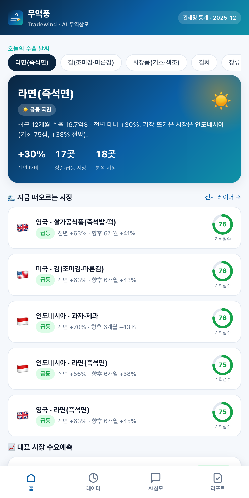
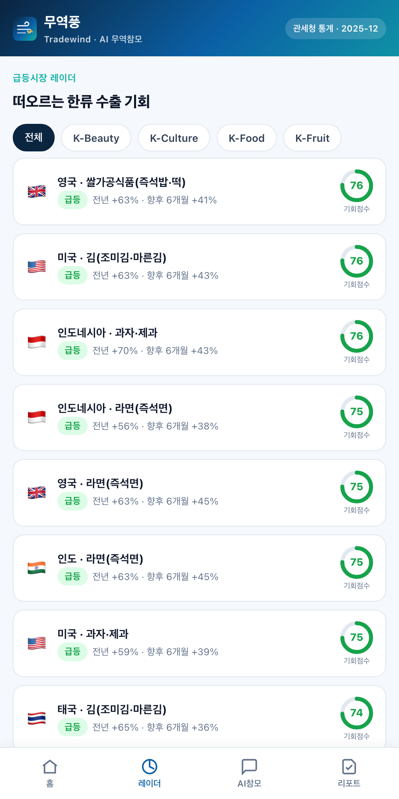
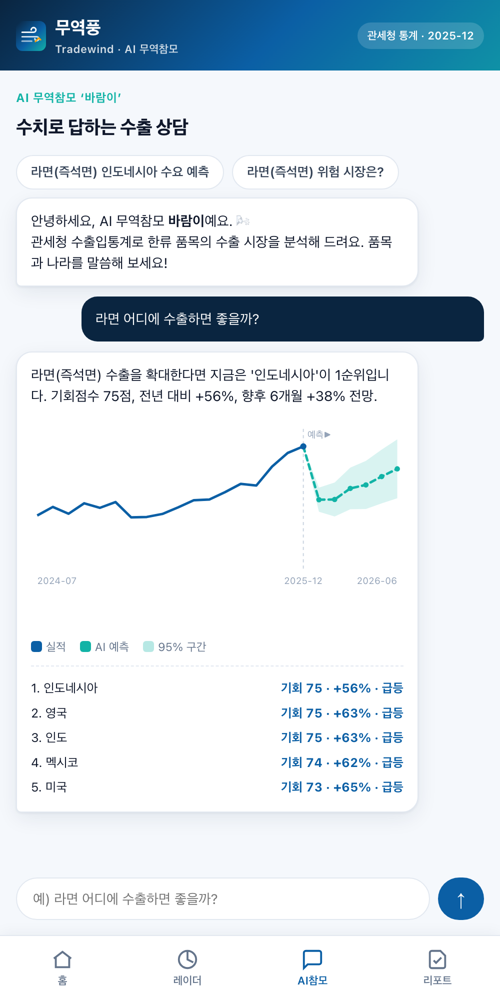

관세청 수출입통계 · 국산 AI
수출의 바람을
수출의 바람을
먼저 읽다
관세 무역데이터와 국산 AI로 K-Food·K-뷰티·K-컬처의 국가별 수출 수요를 예측하고, 지금 떠오르는 시장을 먼저 알려주는 AI 무역참모. 수출 소상공인·중소기업의 첫 해외 시장 결정을 데이터로 돕습니다.

📱 모바일로 바로 체험
spcx0701.github.io/tradewind
관세 무역데이터와 국산 AI로 K-Food·K-뷰티·K-컬처의 국가별 수출 수요를 예측하고, 지금 떠오르는 시장을 먼저 알려주는 AI 무역참모. 수출 소상공인·중소기업의 첫 해외 시장 결정을 데이터로 돕습니다.
품목·국가별로 향후 6개월 수요를 예측해 ‘맑음/흐림’으로 한눈에. 관세청 시계열에 자체 AI가 계절·추세를 분해합니다.
지금 빠르게 떠오르는 시장과 식어가는 시장을 기회점수로 신호. 의존 시장이 둔화되면 먼저 알립니다.
“라면 어디에 팔까?”라고 물으면 실제 수출 수치를 근거로 답합니다. 환각 없이, 숫자로.



필수 데이터로 관세청 품목별 국가별 수출입실적(공공데이터포털)을 사용합니다. 예측·기회점수는 외산 모델·API에 의존하지 않고 무역풍이 직접 개발한 국산 AI(승법 계절분해 + 감쇠 로그선형 추세, 이상탐지 기반 조기경보)로 산출합니다. AI 상담은 국산 LLM(Solar·HyperCLOVA X) 연동 구조입니다.